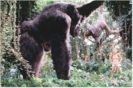
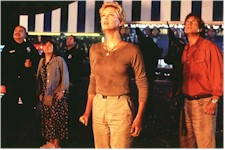

King Kong light. Insipid Joe Young. Just because this film is rated PG doesn’t mean it has to be written on the level of an orangutan. I’ll have to tally up all the movies for the year, but I suspect this will miss my ten worst list, but only by a animatronic, computer graphic hair. I’m told that calendars of dishy star Charlize Theron (Celebrity, Devil’s Advocate) are hot selling pin ups in primate cages everywhere this holiday season. She’s one of the perkiest prizes for testosterone-challenged males (human or not) this Christmas, bedecked in many a halter top to display her lovely naval. The natives in the audience are restless indeed, except for those pre-pubescent youngsters (who, like Joe, probably prefer hide-and-seek to playing doctor) to whom this movie is actually aimed. Hence, for those older males stuck in multiplexes with Joe under icy conditions this winter, Disney unintentionally is providing pleasant wet-dream relief. But, sorry guys, our heroine’s a one gorilla gal. And if the beast happens to weigh a ton and tower over you by a good nine feet, you best approach her on tippy toes. Instead, co-star Bill Paxton stumbles his way to the damsel’s doorstep.
As special effects movies go, this is a long way from the Godzilla disaster, but just as silly plotwise. In that reptilian misadventure, the creature goes directly to New York, does not pass Go, and does not collect $200. Here, the big hairy ape and his mistress take off from deepest Africa for California to elude some poachers at the drop of a trap, without papers or two-week advance airplane tickets, and soon sign with a local talent agency. Oops, a slight embellishment there. Too much holiday cheer.
Let’s backtrack a minute for those of you on your tenth cup of eggnog.

In 1949 the people responsible for the original King Kong came up with a pallid copy in Mighty Joe Young. It was pleasant enough at the time, with an engaging Terry Moore, a young Ben Johnson, and Kong star Robert Armstrong carrying the story as best they could. Merian C. Cooper, Ernest B. Schoedsack and the latter’s wife, Ruth Rose, dumbed down the best monkey film ever made. Cut to the new redo and writers Mark Rosenthal and Lawrence Konner give us flat ginger pale. The fizz is gone.The current update opens with a young Jill Young (Mika Boorem) and her Dian Fossey-esque mom (Linda Purl) on a gorilla watch on the dark continent (Hawaii providing a suitable stand in). Enter some very mean poachers that do a double-Bambi on the good primatologist and Mrs. Gorilla. In the night-time fracas the killer, Strasser (Rade Sherbedgia) becomes digitally challenged -- in a scene possibly too intense for the very young -- thanks to a well placed bite from Joe. "I will kill that monkey," he bellows to his henchman Garth (Peter Firth). Witty dialogue, eh? It doesn’t get any better.
Twelve years pass before Joe and Jill come down the hill to fetch a pail of water. Jill (Theron) has blossomed and Joe is a big boy (his size explained away by aberrant genetics), a few months shy of his bar mitzvah. Paxton rumbles into town on a humvee as Gregg O’Hara (an amalgam of the male leads -- and character names -- from the original Joe), a zoologist in search of blood samples. Confusion reigns (in the audience and on screen) as mercenary natives hired by the clueless Mr. O’Hara allow the film’s effects magicians to strut out their stuff -- a realistic combination of man in a monkey suit, hydraulic prosthetics, bluescreen work, and computer graphics. Rick Baker (Gorilla in the Mist, Greystoke), Hoyt Yeatman, Dreamquest Images, and Industrial Light and Magic make Joe the most interesting "actor" in the film. Thank goodness for big favors.
The action ridiculously moves to the U.S., where director Ron Underwood (Tremors, City Slickers, Speechless) decides to teach Joe how to surf, causing a tidal wave and the destruction of Beverly Hills 90210. The INS saves the day, arresting Joe for lacking a passport. Sorry, the holiday giddies just kicked in again.

Meanwhile back at the ranch. Actually it’s the animal conservancy run by bone-headed Dr. Harry Ruben (David Paymer) who pays Gregg’s salary and welcomes Joe as a star fund-raising attraction. Joe thrashes about the man-made waterfalls and hillside, annoyed by Strasser and Garth (alerted to the big ape’s whereabouts courtesy of CNN) as they sniff for monkey meat. Joe becomes a huge party pooper at a gala event (with Terry Moore and special effects wiz Ray Harryhausen in cameo attire) before he gets his chance to go directly to jail. Jill, her makeup skills supposedly this side of Neanderthal, must have gotten the editors of Vanity Fair (Theron graces the current cover) to doll her up for the soirée. Drop dead gorgeous, but totally out of character.After Joe and Jill hitch a ride on the wrong truck, the scared beast is on the loose along Hollywood Blvd., panhandling for spare bananas and climbing up Mann’s Chinese, before popping up in the HOLLYWOOD sign. No one, not even a 2,000-pound gorilla, can maneuver through L.A. traffic this quickly. And so on, through to a fiery, ferris wheel, conclusion.
Enough. I’ve had enough. A credit disclaimer should been added that no humans were awake during the making of this film. Be sure to leave a note with your usher, "Please wake me when the movie is over."